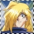
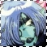
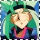

-----------------------------------------------------------
LINA INVERSE
This character should ring a bell.^_^ She is the main character of the entire series, and she is a very intelligent, hot-headed sorceress. She is obsessed with her small chest, and anyone who comment on it would get a hard beating out of Lina. XD She loves to eat, but never seems to grow big XD and she the second best sorceress in the Slayers universe, knowing the great Giga Slave spell and various other black and white magic. (The best sorceress is her older sister, Luna) Xelloss stretches Lina's patience and temper to the limit with his deceptions and tricks. She is very much aware that Xelloss is a Mazoku, and therefore has no good intentions for her. But as a clever girl herself, Lina uses him to her advantage at times.
GOURRY GABRIEV
Gourry is Lina's protector and her significant other. He is rather slow in the head and dumb^^but very strong, gallant, and a skilled swordsman. He has no ability to use magic and attacks with his sword: Hikari no Ken, or Sword of Light. he serves partly as a comic relief of the show and as a opportunity to let the viewers know about the Slayers world. (i.e. he never remembers who the stronger Mazoku are, or where a certain place is, so Lina would have to explain it.) One of his weaknesses is that he is naive, and liable to believe in anything anyone tells him. He doesn't really mind Xelloss, or is rather clueless of his powers or exactly who he really is.
AMELIA WIL TESLA SAILLUNE
She is a bright (as in happy) and cheerful young Princess of Saillune who firmly believes in fighting for justice. Therefore, she only uses white magic. She can be overly dramatic at times and fully expresses her attraction towards Zelgadis Greywords.^^But she's really a kind hearted, adorable, generally harmless little girl. XDD As a fighter of justice, she was determined to "right" Xelloss and bring him to the good side. She attempts to try saying "life is wonderful, life is wonderful" over and over again to Xelloss to cure him. XDD
Zelgadis Greywords
Zel is a chimera whose outer body is made entirely of pearl stone. He seems to be popular with the fans^^and for a good reason.^_~ He is very attractive but quiet and almost always calm.^^He possesses intelligence and magic as well :) making him an well rounded character. His goal is to get the Clair Bible so he can turn back to a normal human being. He hates Xelloss in the beginning for burning the Clair Bible manuscripts before he could see them. But later he eases up somewhat^^although they still aren't best friends. Zel is attracted to Amelia but he tries his hardest not to show it. ^-^
 FILIA UL COPT
FILIA UL COPT
Filia is a Golden Ryuzoku, and a priestess of Karyu-oh (fire dragon god). She is very pretty, honest, and ladylike. She only appears in the TRY season and despises Xelloss, a priest of the Mazoku race. She possesses powers of a Golden Dragon, and can be a powerful opponent, as the Ryuzoku race is among the most powerful of the dragons. She has the ability to transform into a Golden Dragon, like all Ryuzoku, and has the ability to teleport and use various white magic. She is not easily angered, but Xelloss does an great job of making her mad.^^When she does get angry, she usually turns into a dragon and tramples/destroys everything around her in an attempt to get Xelloss. XDD
VALGARV
Valgarv only appears in the TRY season. He is also a Ryuzoku, but of a different race than Filia. He possessed both the powers of the Mazoku and powers of the Ryuzoku. He is the only servant of Gaav left and he was given Mazoku powers by Gaav. As a mix of Mazoku and Ryuzoku, he is a POWERFUL and very dangerous guy. The poor guy has many mixed emotions, and all the hatred and anger he possesses made him basically insane. He is full of pain for most of the season and strives to summon the DarkStar and destroy the world. Fortunately he doesn't die, but ends up reborn and taken under the care of Filia.
<< return